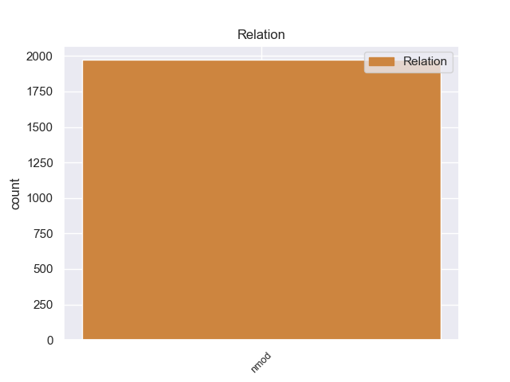
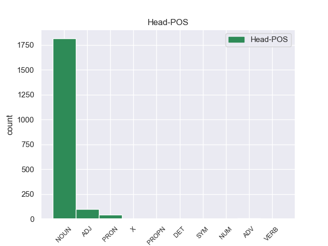
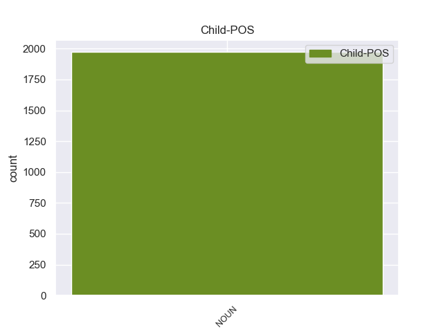

Distribution of features within this leaf



Agreement Rules sorted by frequency.
- When the dependent token is the nominal modifier(nmod) of the head token, and the dependent token is NOUN.
1 Αυτό _ _ _ _ 0 _ _ _
2 μπορεί _ _ _ _ 0 _ _ _
3 να _ _ _ _ 0 _ _ _
4 μην _ _ _ _ 0 _ _ _
5 οδηγήσει _ _ _ _ 0 _ _ _
6 σ _ _ _ _ 0 _ _ _
7 τη _ _ _ _ 0 _ _ _
8 λήξη _ _ _ _ 0 _ _ _
9 του _ _ _ _ 0 _ _ _
10 εν _ _ _ _ 0 _ _ _
11 λόγω _ _ _ _ 0 _ _ _
12 ζητήματος _ _ _ _ 0 _ _ _
13 αλλά _ _ _ _ 0 _ _ _
14 , _ _ _ _ 0 _ _ _
15 σ _ _ _ _ 0 _ _ _
16 τη _ _ _ _ 0 _ _ _
17 μορφή _ _ _ _ 0 _ _ _
18 υπό _ _ _ _ 0 _ _ _
19 την _ _ _ _ 0 _ _ _
20 οποία _ _ _ _ 0 _ _ _
21 την _ _ _ _ 0 _ _ _
22 λάβαμε _ _ _ _ 0 _ _ _
23 , _ _ _ _ 0 _ _ _
24 αυτή _ _ _ _ 0 _ _ _
25 η _ _ _ _ 0 _ _ _
26 αίτηση _ _ _ _ 0 _ _ _
27 άρσης άρσης ADJ _ Gender=Fem|Number=Sing 0 _ _ _
28 της _ _ _ _ 0 _ _ _
29 ασυλίας ασυλίας NOUN _ Gender=Fem|Number=Sing 27 nmod _ _
30 ήταν _ _ _ _ 0 _ _ _
31 , _ _ _ _ 0 _ _ _
32 κατά _ _ _ _ 0 _ _ _
33 την _ _ _ _ 0 _ _ _
34 άποψη _ _ _ _ 0 _ _ _
35 της _ _ _ _ 0 _ _ _
36 Επιτροπής _ _ _ _ 0 _ _ _
37 Νομικών _ _ _ _ 0 _ _ _
38 Θεμάτων _ _ _ _ 0 _ _ _
39 , _ _ _ _ 0 _ _ _
40 απαράδεκτη _ _ _ _ 0 _ _ _
41 , _ _ _ _ 0 _ _ _
42 άποψη _ _ _ _ 0 _ _ _
43 την _ _ _ _ 0 _ _ _
44 οποία _ _ _ _ 0 _ _ _
45 συνιστώ _ _ _ _ 0 _ _ _
46 σ _ _ _ _ 0 _ _ _
47 το _ _ _ _ 0 _ _ _
48 Σώμα _ _ _ _ 0 _ _ _
49 να _ _ _ _ 0 _ _ _
50 υιοθετήσει _ _ _ _ 0 _ _ _
51 . _ _ _ _ 0 _ _ _
Disagree Examples:
1 Otra _ _ _ _ 0 _ _ _
2 alternativa _ _ _ _ 0 _ _ _
3 para _ _ _ _ 0 _ _ _
4 los _ _ _ _ 0 _ _ _
5 techos techo ADJ _ Gender=Masc|Number=Plur 0 _ _ _
6 planos _ _ _ _ 0 _ _ _
7 de _ _ _ _ 0 _ _ _
8 la _ _ _ _ 0 _ _ _
9 modernidad modernidad NOUN _ Gender=Fem|Number=Sing 5 nmod _ _
10 sería _ _ _ _ 0 _ _ _
11 exagerar _ _ _ _ 0 _ _ _
12 un _ _ _ _ 0 _ _ _
13 techo _ _ _ _ 0 _ _ _
14 tradicional _ _ _ _ 0 _ _ _
15 para _ _ _ _ 0 _ _ _
16 llamar _ _ _ _ 0 _ _ _
17 la _ _ _ _ 0 _ _ _
18 atención _ _ _ _ 0 _ _ _
19 incluso _ _ _ _ 0 _ _ _
20 más _ _ _ _ 0 _ _ _
21 a _ _ _ _ 0 _ _ _
22 esta _ _ _ _ 0 _ _ _
23 , _ _ _ _ 0 _ _ _
24 como _ _ _ _ 0 _ _ _
25 la _ _ _ _ 0 _ _ _
26 Academia _ _ _ _ 0 _ _ _
27 Estadounidense _ _ _ _ 0 _ _ _
28 de _ _ _ _ 0 _ _ _
29 las _ _ _ _ 0 _ _ _
30 Artes _ _ _ _ 0 _ _ _
31 y _ _ _ _ 0 _ _ _
32 las _ _ _ _ 0 _ _ _
33 Ciencias _ _ _ _ 0 _ _ _
34 de _ _ _ _ 0 _ _ _
35 Kallmann _ _ _ _ 0 _ _ _
36 McKinnell _ _ _ _ 0 _ _ _
37 & _ _ _ _ 0 _ _ _
38 Wood _ _ _ _ 0 _ _ _
39 en _ _ _ _ 0 _ _ _
40 Cambridge _ _ _ _ 0 _ _ _
41 , _ _ _ _ 0 _ _ _
42 Massachusetts _ _ _ _ 0 _ _ _
43 , _ _ _ _ 0 _ _ _
44 teniendo _ _ _ _ 0 _ _ _
45 tres _ _ _ _ 0 _ _ _
46 niveles _ _ _ _ 0 _ _ _
47 de _ _ _ _ 0 _ _ _
48 techo _ _ _ _ 0 _ _ _
49 bajo _ _ _ _ 0 _ _ _
50 a _ _ _ _ 0 _ _ _
51 cuatro _ _ _ _ 0 _ _ _
52 aguas _ _ _ _ 0 _ _ _
53 constituyendo _ _ _ _ 0 _ _ _
54 se _ _ _ _ 0 _ _ _
55 uno _ _ _ _ 0 _ _ _
56 encima _ _ _ _ 0 _ _ _
57 de _ _ _ _ 0 _ _ _
58 otro _ _ _ _ 0 _ _ _
59 para _ _ _ _ 0 _ _ _
60 una _ _ _ _ 0 _ _ _
61 declaración _ _ _ _ 0 _ _ _
62 enfática _ _ _ _ 0 _ _ _
63 de _ _ _ _ 0 _ _ _
64 refugio _ _ _ _ 0 _ _ _
65 . _ _ _ _ 0 _ _ _
1 Otra _ _ _ _ 0 _ _ _
2 alternativa _ _ _ _ 0 _ _ _
3 para _ _ _ _ 0 _ _ _
4 los _ _ _ _ 0 _ _ _
5 techos _ _ _ _ 0 _ _ _
6 planos _ _ _ _ 0 _ _ _
7 de _ _ _ _ 0 _ _ _
8 la _ _ _ _ 0 _ _ _
9 modernidad _ _ _ _ 0 _ _ _
10 sería _ _ _ _ 0 _ _ _
11 exagerar _ _ _ _ 0 _ _ _
12 un _ _ _ _ 0 _ _ _
13 techo _ _ _ _ 0 _ _ _
14 tradicional _ _ _ _ 0 _ _ _
15 para _ _ _ _ 0 _ _ _
16 llamar _ _ _ _ 0 _ _ _
17 la _ _ _ _ 0 _ _ _
18 atención _ _ _ _ 0 _ _ _
19 incluso _ _ _ _ 0 _ _ _
20 más _ _ _ _ 0 _ _ _
21 a _ _ _ _ 0 _ _ _
22 esta _ _ _ _ 0 _ _ _
23 , _ _ _ _ 0 _ _ _
24 como _ _ _ _ 0 _ _ _
25 la _ _ _ _ 0 _ _ _
26 Academia _ _ _ _ 0 _ _ _
27 Estadounidense _ _ _ _ 0 _ _ _
28 de _ _ _ _ 0 _ _ _
29 las _ _ _ _ 0 _ _ _
30 Artes _ _ _ _ 0 _ _ _
31 y _ _ _ _ 0 _ _ _
32 las _ _ _ _ 0 _ _ _
33 Ciencias _ _ _ _ 0 _ _ _
34 de _ _ _ _ 0 _ _ _
35 Kallmann _ _ _ _ 0 _ _ _
36 McKinnell _ _ _ _ 0 _ _ _
37 & _ _ _ _ 0 _ _ _
38 Wood _ _ _ _ 0 _ _ _
39 en _ _ _ _ 0 _ _ _
40 Cambridge _ _ _ _ 0 _ _ _
41 , _ _ _ _ 0 _ _ _
42 Massachusetts _ _ _ _ 0 _ _ _
43 , _ _ _ _ 0 _ _ _
44 teniendo _ _ _ _ 0 _ _ _
45 tres _ _ _ _ 0 _ _ _
46 niveles _ _ _ _ 0 _ _ _
47 de _ _ _ _ 0 _ _ _
48 techo _ _ _ _ 0 _ _ _
49 bajo _ _ _ _ 0 _ _ _
50 a _ _ _ _ 0 _ _ _
51 cuatro _ _ _ _ 0 _ _ _
52 aguas _ _ _ _ 0 _ _ _
53 constituyendo _ _ _ _ 0 _ _ _
54 se _ _ _ _ 0 _ _ _
55 uno _ _ _ _ 0 _ _ _
56 encima _ _ _ _ 0 _ _ _
57 de _ _ _ _ 0 _ _ _
58 otro _ _ _ _ 0 _ _ _
59 para _ _ _ _ 0 _ _ _
60 una _ _ _ _ 0 _ _ _
61 declaración declaración NOUN _ Gender=Fem|Number=Sing 0 _ _ _
62 enfática _ _ _ _ 0 _ _ _
63 de _ _ _ _ 0 _ _ _
64 refugio refugio NOUN _ Gender=Masc|Number=Sing 61 nmod _ SpaceAfter=No
65 . _ _ _ _ 0 _ _ _
1 Este _ _ _ _ 0 _ _ _
2 triunfo _ _ _ _ 0 _ _ _
3 supuso _ _ _ _ 0 _ _ _
4 su _ _ _ _ 0 _ _ _
5 comienzo _ _ _ _ 0 _ _ _
6 en _ _ _ _ 0 _ _ _
7 el _ _ _ _ 0 _ _ _
8 mundo mundo NOUN _ Gender=Masc|Number=Sing 0 _ _ _
9 de _ _ _ _ 0 _ _ _
10 moda moda NOUN _ Gender=Fem|Number=Sing 8 nmod _ SpaceAfter=No
11 . _ _ _ _ 0 _ _ _
1 Un _ _ _ _ 0 _ _ _
2 observador _ _ _ _ 0 _ _ _
3 externo _ _ _ _ 0 _ _ _
4 puede _ _ _ _ 0 _ _ _
5 tomar _ _ _ _ 0 _ _ _
6 directamente _ _ _ _ 0 _ _ _
7 las _ _ _ _ 0 _ _ _
8 medidas _ _ _ _ 0 _ _ _
9 nomotéticas _ _ _ _ 0 _ _ _
10 ( _ _ _ _ 0 _ _ _
11 ejemplos ejemplo NOUN _ Gender=Masc|Number=Plur 0 _ _ _
12 de _ _ _ _ 0 _ _ _
13 éstas _ _ _ _ 0 _ _ _
14 medidas medida NOUN _ Gender=Fem|Number=Plur 11 nmod _ _
15 pueden _ _ _ _ 0 _ _ _
16 ser _ _ _ _ 0 _ _ _
17 el _ _ _ _ 0 _ _ _
18 peso _ _ _ _ 0 _ _ _
19 de _ _ _ _ 0 _ _ _
20 un _ _ _ _ 0 _ _ _
21 objeto _ _ _ _ 0 _ _ _
22 o _ _ _ _ 0 _ _ _
23 la _ _ _ _ 0 _ _ _
24 cantidad _ _ _ _ 0 _ _ _
25 de _ _ _ _ 0 _ _ _
26 veces _ _ _ _ 0 _ _ _
27 que _ _ _ _ 0 _ _ _
28 se _ _ _ _ 0 _ _ _
29 presenta _ _ _ _ 0 _ _ _
30 un _ _ _ _ 0 _ _ _
31 comportamiento _ _ _ _ 0 _ _ _
32 particular _ _ _ _ 0 _ _ _
33 ) _ _ _ _ 0 _ _ _
34 ; _ _ _ _ 0 _ _ _
1 Una _ _ _ _ 0 _ _ _
2 masa _ _ _ _ 0 _ _ _
3 vegetal _ _ _ _ 0 _ _ _
4 que _ _ _ _ 0 _ _ _
5 , _ _ _ _ 0 _ _ _
6 a _ _ _ _ 0 _ _ _
7 el _ _ _ _ 0 _ _ _
8 secar _ _ _ _ 0 _ _ _
9 se _ _ _ _ 0 _ _ _
10 con _ _ _ _ 0 _ _ _
11 las _ _ _ _ 0 _ _ _
12 elevadas _ _ _ _ 0 _ _ _
13 temperaturas _ _ _ _ 0 _ _ _
14 propias propio ADJ _ Gender=Fem|Number=Plur 0 _ _ _
15 de _ _ _ _ 0 _ _ _
16 los _ _ _ _ 0 _ _ _
17 meses mes NOUN _ Gender=Masc|Number=Plur 14 nmod _ _
18 estivales _ _ _ _ 0 _ _ _
19 , _ _ _ _ 0 _ _ _
20 podría _ _ _ _ 0 _ _ _
21 facilitar _ _ _ _ 0 _ _ _
22 la _ _ _ _ 0 _ _ _
23 propagación _ _ _ _ 0 _ _ _
24 de _ _ _ _ 0 _ _ _
25 las _ _ _ _ 0 _ _ _
26 llamas _ _ _ _ 0 _ _ _
27 en _ _ _ _ 0 _ _ _
28 caso _ _ _ _ 0 _ _ _
29 de _ _ _ _ 0 _ _ _
30 incendio _ _ _ _ 0 _ _ _
31 forestal _ _ _ _ 0 _ _ _
32 . _ _ _ _ 0 _ _ _